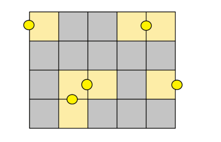
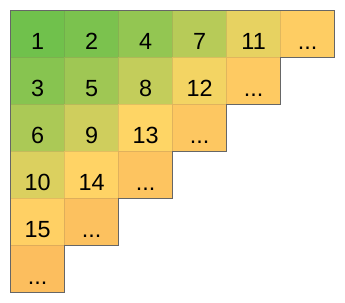
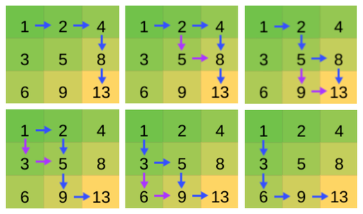

比赛链接
A - Park Lighting
题意
给定n×m矩形, 每一条长度为1的边均是一条街道(例如2×2的矩形有12条街道)
每条街道的中点均可放置一盏路灯, 路灯可照亮与之相邻的两个方格(若在边缘则为一个)

问至少需要几盏路灯可照亮全部方格
思路&做法
稍微想想就能发现, 答案即为⌈2mn⌉
B - Maria Breaks the Self-isolation
题意
Maria要邀请一些人来开派对, 她一共可邀请n个人, 第i个人只有在当前在场人数(包括Maria和自己)严格大于di时才会赴约
Maria可以一次性邀请多人, 此时在场人数按已赴约人数+当前邀请人数来计算
Maria可以邀请无限次, 问派对最多可以有多少人
思路&做法
我的做法
显然, 如果di>n, 那对应的人肯定不会赴约
我们可以把di从低到高排个序, 然后尽可能邀请要求低的
具体来说就是: 记录当前拟邀请人数, 如果已赴约人数+拟邀请人数严格大于拟邀请人员中要求最高的, 就把他们邀请过来
最后剩下的就是请不动的人了
我们可以开个大小为n的桶统计所有di相同的人数
接下来从1到n遍历来统计拟邀请人数
官方题解
把di从低到高排个序, 然后从高到低遍历寻找第一个值⩽下标的数
因为官方题解用的快排, 所以复杂度要高一些, 完全可以换成桶排
复杂度
单次Θ(n)
代码
1
2
3
4
5
6
7
8
9
10
11
12
13
14
15
16
17
18
19
20
21
22
23
24
25
26
27
28
29
30
31
32
33
34
35
36
37
|
int main() {
int kase;
read(kase);
while (kase--) {
i64 n, _, maxn;
read(n);
vector<i64> cnt(n + 1);
_for(i, 1, n) {
read(_);
maxn = max(_, maxn);
if (_ > n) continue;
++cnt[_];
}
if (maxn <= n) {
print(n + 1);
continue;
}
i64 ans = 1;
_ = 0;
_for(i, 1, n) if (cnt[i]) {
_ += cnt[i];
if (ans + _ > i) {
ans += _;
_ = 0;
}
}
print(ans);
}
}
|
C - Celex Update
题意
给定如下形式的矩阵

规定
-
坐标(x,y)对应的格子: 从数字为1的格子出发, 向右x−1个格, 再向下y−1个格所到达的格子
-
转移: 从(x,y)移动到(x+1,y)或(x,y+1)
-
路径: 从(x1,y1)经若干步转移到达(x2,y2) (x1⩽x2,y1⩽y2), 以经过的所有格子上值的和为该路径的值
称两个路径不同, 当且仅当两个路径的值不同
问从(x1,y1)到(x2,y2) (x1⩽x2,y1⩽y2)的不同路径数
思路&做法
我们可以发现, 任意一格的下侧格子值总比右侧格子值大1
所以, 只要将路径中出现的"右→下"改成"下→右"就能使路径值+1
显然, 我们可以通过有限步上述操作将"右→...→右→下→...→下"变为"下→...→下→右→...→右", 同时该过程中路径的值严格单调增加
例如

显然上述前者为最短路径, 后者为最长路径
而显然任意位于两者之间的值都有路径与之对应
故答案即为最长路径-最短路径+1
实际上我们不需要求出最短路径和最长路径的值
观察上图, 我们将最短路径变为最长路径一共用了(x2−x1)(y2−y1)步, 每一步都使路径值+1
也就是说(x2−x1)(y2−y1)就是最长路径-最短路径
故结果为(x2−x1)(y2−y1)+1
D - The Best Vacation
挺简单一道题咕了4天, 比赛时代码写得太乱就没写完, 我太菜了
题意
给定数n,x和数组d[1..n], 由这组数可构造一个数组l[1..sum(d[],1,n)]满足
l∑i=1j−1di+k=k, j=1,2,...,n;k=1,2,...,dj
即将每个di均扩展成{1,2,...,di}, 然后将所有的按顺序拼接在一起
求l[]首尾相接形成的环中, 长度为x的子区间和的最大值
举个例子, n=5,x=6,d={4,2,3,1,3}
那么 l={1,2,3,4,1,2,1,2,3,1,1,2,3}
答案为15, 对应的子区间为{2,3,1,2,3,4}
思路&做法
尺取法
显然构造出l[]之后再用l[]求会使时空双双爆炸
但是l[]的特殊性质使得我们可以通过d[]来解决问题, 这时候我们可以当作对l[]做了一个按给定方案进行的分块
我们可以很轻松的求出每一块的和 (2d(d+1)), 零碎部分也很好求
处理环上的区间问题, 我们往往会直接将其复制一份并接在末尾, 这样就断环为线了 (d[1..n] -> d[1..2n])
我们注意到, 如果某区间为最优解, 则区间的右端点一定为局部的峰值, 所以我们在枚举的时候可以直接把右端点定为di, 这也就相当于倒序枚举di
下一个问题就是解决怎么处理左端点了
官方题解用的二分, 我用的前缀和
首先记录d[1..2n]的前缀和sum_d[1..2n], 然后最开始让l = 2n, 当r从2n到n枚举的时候, 只需要保持sum_d[r] - sum_d[l-1] > x即可, 这样就找到了左端点
最后一个问题是处理区间和
就像我上面所说的, 整块直接求, 剩下零碎部分的另求 (2d(d+1)−2d′(d′+1), 其中d′是左端点所指的块中没被区间覆盖上的元素数)
这里可以用前缀和也可以不用, 用前缀和就非常简单了, 我没用前缀和是因为我最开始的思路有问题
我的处理方法就是在移动区间的时候减去右端点指向的块, 再补上左边部分
突然发现这不是莫队吗
最后的最后补充个细节, 如果按我的做法处理, 在枚举下一个右端点之前记得把零碎部分减掉
复杂度
首先Θ(n)读入数据并求前缀和
然后再Θ(n)遍历右端点, 在总的遍历过程中, 每个sum[]和d[]中元素被访问次数为1或2, 故遍历的总复杂度为Θ(n)
因此最终复杂度为Θ(n)
代码
1
2
3
4
5
6
7
8
9
10
11
12
13
14
15
16
17
18
19
20
21
22
23
24
25
26
27
28
29
|
i64 d[N], sum[N];
int main() {
#define _S(n) ((n) * ((n) + 1) / 2)
i64 n, x;
cin >> n >> x;
_for(i, 1, n) {
cin >> d[i];
sum[i] = sum[i - 1] + d[i];
}
_for(i, n + 1, 2 * n) sum[i] = sum[i - 1] + (d[i] = d[i - n]);
i64 ans = 0, _ = 0, l = n *= 2, diff = 0;
_repr(r, n, n / 2) {
while (sum[r] - sum[l - 1] <= x) {
_ += _S(d[l]);
--l;
}
diff = sum[r] - sum[l - 1] - x;
_ += _S(d[l]) - _S(diff);
if (_ > ans) ans = _;
_ -= _S(d[r]) + _S(d[l]) - _S(diff);
}
cout << ans;
}
|